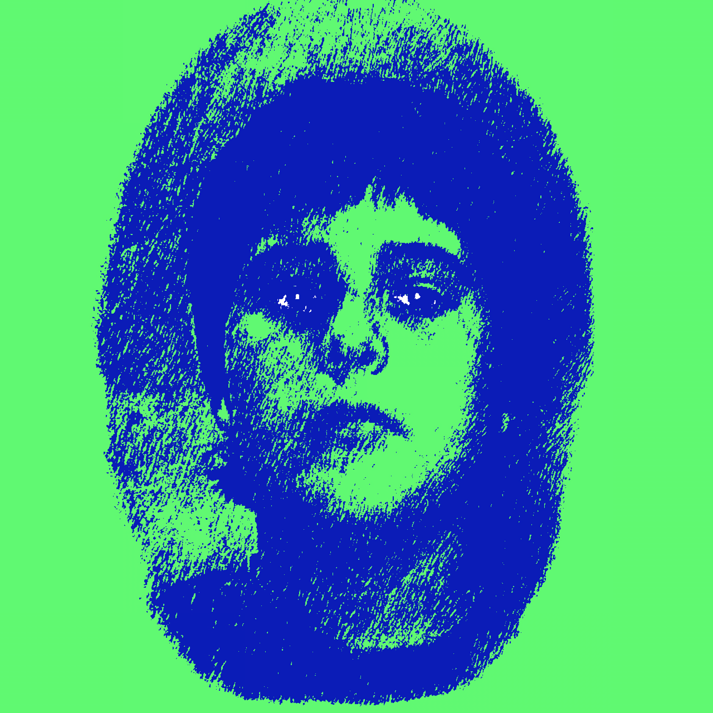

Good Night Future Boy EP
|  | |
|---|---|
| RELEASED UNDER THE NAME | Geno7 |
| RELEASED | October 30, 2020 |
| GENRES | Alternative Rock, Progressive Rock, Psychedelic Pop, Garage Rock, Broadway Showtunes |
| RUNTIME | 14:33 |
| ALBUM ARTWORK | Geno7 |
| PERSONNEL | Everything by Geno7 (barring Future Boy Conan and Fraggle Rock samples) |
| MUSIC VIDEOS | |
{kind=link}

|
|
|
DOWNLOAD AS .RAR FROM MEGA (MP3) |
A FACE LEFT TO SPITE
Every time I think I can do a smaller project to tide people over until the release of a larger project I'm currently working on, the smaller project always ends up taking way longer than I think it'll take, often even longer than what it was originally intended to tide people over for. This was the case with The Munchley's Lunch EP, intended to tide people over until the release of a projected second Atomic Shrine Maiden album, which at this point (November of 2020) is still maybe 60% finished.
Munchley's Lunch was a name that came from an indie short film one of my uncles was involved in the production of. I thought it was a funny name, and the EP wasn't really intended to be more than just a jumble of odds and ends- some old stuff, some recycled stuff, some new stuff. I had 9 finished tracks and 2 unfinished tracks of an intended 12-track album (Only really called it an EP because half of it would be behind a "Bonus Track" paywall Spirit Phone-style) before I made The Dorian Gray Show and decided it was too competent to not be on its own album, and Munchley's Lunch was essentially scrapped and turned into Good Night Future Boy.
Of the 12 tracks on Munchley, Trash Boat is the only one that ended up on GNFB. The only other Munchley track that's seen a proper release anywhere is The Undertaker, which I used for Night Terrors. Might still use the name or some of the remaining tracks from it someday though.
In the end, GNFB is still kind of a jumble of new material and repurposed material from other projects, but I think the result is something a lot more concise and curated. In other words, still a lot of leftover shit, but at least it's the best of the leftover shit.
Yeah, the kid on the cover is me. I was 9 or 10 years old in the picture, and it was taken at a California Chuck E. Cheese in a Chuck E. Cheese's Sketchbook, a photobooth where you sit and get your picture taken and you see a little animation on a screen of a cartoon hand "drawing" what's basically just your picture with a photoshop filter over it, then it gets printed out on a little sheet of paper and you can take it home. that sheet of paper with a bunch of heavy edits and color manipulation in Clip Studio Paint is what you see on the cover. I guess I always really like stuff that straddles the line between serious and silly or childish so making a mock Warhol out of a Chuck E. Cheese souvenir checks out.
{kind=link}
{kind=link}
TRACK LISTING
Click on a track for more info.
ABOUT
The title of the album is a reference to a line from Back to the Future, but somewhere down the line I realized it could also kinda be a double reference to Future Boy Conan, so the album opens and ends with samples of the eyecatches from that anime.
Each eyecatch has a picture of characters from the anime divided into three segments on three panels, and the panels flip around to mix-and-match segments of the characters Picture Consequences-style. That's all the clattering and bell sounds you're hearing. I always thought they sounded really pleasant, especially that cute glockenspiel glissandro at the end.

LYRICS
[INSTRUMENTAL]
ABOUT
To be totally frank, this song came about because a musician friend of mine gave me some constructive critcism about my songwriting that made me really insecure and introspective. I mean it wasn't even really that tough or anything, I just have a tendency to overthink things. And in the end I guess I should thank him for making me stop and try to write a song in a way I'd never tried before.
Most of my songs are kind of written as they're being recorded. So like, the first half of a song could be 100% recorded and mixed, with the second half not even having been written yet. It's a "straight-ahead" approach to songwriting that gives you more instant gratification and lets you know sooner if a song is working out or not. However, Dorian Gray Show has the distinction of being one of the first songs I wrote where like, I mapped out the entire skeleton of the song with just a cheap keyboard patch and a basic no-fills drum track before I even started adding other instruments, and when I added them I laid them on one at a time and put a lot of thought into each layer.
It was a lot more meticulous and patience-testing than I was used to songwriting being, but I think I ended up with something a lot more structurally complex.
The song ended up being this huge mishmash of everything I was listening to at the time, which is usually my favorite kind of song. But it does mean there's a lot to talk about.
The long, slow, calm buildup leading abruptly into a faster, louder thing is a songwriting trope I've always loved and there are too many songs to count that do that, but I was mainly thinking Mr. Bungle's Sweet Charity, Childish Gambino's Me and Your Mama and Kero Kero Bonito's Outside, though I guess Outside is a unique case where the "calm part" isn't so much "the beginning of the song or a previous song on the album" as it is "their entire musical careers leading up to this song". The calm bit in Dorian Gray also has a little bit of Lambchop in it too I think, and the loud part actually being mixed way louder than the rest of it definitely draws from The Mars Volta's Cygnus, Vismund Cygnus.
I think a big flaw with this part though is it's kind of a barrier of entry for the rest of the album and it's a little repetetive, and every time I've seen people listen to it on streams or whatever they always wonder why it's mixed so quiet and go to turn it up and I have to warn them not to.
Like I said, I had Kero Kero Bonito's Outside in the back of my head for a lot of the song, and there are some metal influences here and there, but let's be real- this song could not be more Cardiacs. it's so Cardiacs that it's almost a little embarrassing. Apart from the more obvious superficial influences (arrangement, ascending scales, hemiolas and rhythmic fuckery, even slowing the tempo during the finale), I think like, I went into it trying to shove as many disparate musical ideas into a three minute song as possible, so that it ends up being kind of a "mini-prog" song, or a prog song with the length of a punk song. Which I think is very Cardiacs.
Shit, now we're at the part where I talk about the lyrics. This is the first one of these I'm writing and only now do I realize how heavy they're gonna be, both to read and write. Put on a fart sound effect compilation or something.
Basically, the lyrics are a 21st century retelling of Oscar Wilde's The Picture of Dorian Gray, in the style of like, a Twilight Zone or Tales from the Crypt episode. This was written at the height of the #MeToo movement and I guess it was me processing the feelings of betrayal I felt toward people in the entertainment industry I looked up to. I don't often intend for my songs to be topical but some just kinda turn out that way because usually lyrics reflect how I feel during the production of a song.
I never wanna give too much away about the specifics of lyrics because I find a lot of value in figuring them out yourself through repeat listens, so I guess have fun with that.
LYRICS
Seen it before, SaW it last week
Episode numbers match but details don't
Seventeen years in U-matic tapes
are you just telling me what TV won't?
What's he doing with the drink?
Now they're getting in the car
Oh, god, I don't remember this
All those hotel rooms
All those unsealed cans, Oh, god,
I don't remember this at all
For ages you kept everyone blind to
public and private life disparities
Hoping the dog, kids and a wife
would outmatch you in nuclearity
Now he's loading up
the loaded up
oh, god, I don't remember this
Now you've made a family, like yours
but amphibious, oh god,
I don't remember this at all
Scrawled in black
on the back
three numbers matching the date in the papers
Push it in,
if the sin's
yet to begin, is there time? could I save her?
CMB
Snowy peaks
and warring fleas, won't you show me the picture?
Tires screech
Turn the key
the floorboards creak as he walks like a fennec,
satin gloves
likely 'cause
it ill becomes him to lead the forensics,
counts to four,
moving forward
like the doorknob was wired to semtex,
Droste effect
on the set
she turns her head, now she's sure what the end is
ABOUT
One day, I was watching the house while my parents were out and I was the only one there. It was then that my brain decided, as it often does, to bombard me with scary intrusive thoughts - What if someone broke into the house and straight up murdered me right now? What if that just like, happened?
And weirdly, my first reaction to this thought wasn't, "how would my friends and family react?" it was, "what would happen to all the shit I'm working on?"
Would all my huge unfinished projects stay unfinished? Would there be some kind of failsafe system I could use to send all my stuff to people I trust so they could... release it unfinished? finish it for me and release it? Do I even have someone I trust enough to do that?
And like any sane man I thought, this would make a great song!
I did choose the name Marian on purpose, it's the name of a character a friend of mine and I created from a - you guessed it - yet unfinished story. Both the story and the character have taken a lot of forms and gone through a lot of iterations over the years and maybe someday it'll get finished, but who can say, really?
It's really rare when I'll write the lyrics before the music (iirc this has only happened one time so far), most of the time I either figure out the lyrics somewhere in the middle of doing the music or, as in this case, I'll think of a lyrical theme first and then write the music, then the actual lyrics.
The first part of the song I wrote was what ended up becoming the guitar part under the prechorus - the "run a red light, make a pancake on the pavement" bit - and it was actually that same day I was by myself in the house. I was listening to a Black Sabbath song, pretty sure it was Hole in the Sky, and there was a riff in it that I had the idea to slow down and fuck with the timing. I later started writing a completely different thing and it somehow fit in with that.
I wrote Marian right around the holiday season when the weather starts getting colder and cloudier, and for whatever reason it's always around that time of year when I get really into Elephant 6 Collective bands, especially Apples in stereo and Of Montreal, so you can hear them all over it. I also think there was a Lemon Twigs song that influenced the piano bit during the bridge.
Speaking of the bridge, there's a sample from Fraggle Rock playing over the first bit. It's from this really great episode called Marooned where two of the lead characters get trapped in a cave-in and they think they're gonna die, and most of the episode is just them confronting their mortality in a crushingly realistic way and it's actually legitimately hard to watch. Confronting mortality fit pretty well with the theme of the song, and like, I'm always into stuff that creates that weird combination of childlike innocence and really heavy subject matter.
LYRICS
when life's akin
to nothing more than a candle in the wind
how can I help but fear
what would become of her if I wasnt here
would her and Homer Collyer be peers?
run a red light, make a pancake on the pavement
home-invader-cum-assailant, hell, a safe to the cranium
there's too many ways, and now, alone, chaperoneless,
she begins to decompose, time corroding her bones like a rose in acid rain
who's takin' care of my Marian
when I'm gone, when I'm gone?
who's takin' care of my Marian
when I'm gone, when I'm gone?
when I'm gone, when I'm gone?
but really, who to trust
with treating little Marian justly?
when each day, each hour
I'm surrounded by those who disavow her
like a redneck shooting at a water tower 'cause he thinks its a ufo
gimme a remote, securely latched in a satchel
and attached to a manacle, attached to my hand
and if I'm starting to pass, with presses of the remote,
notifications apropos of my EKGs plateuing are bestowed upon the ones that I
choose to take care of my Marian
when I'm gone, when I'm gone
Who's takin' care of my Marian...
I'm not ready to go yet
please don't let me go yet
so much I want to see her
do and much left to teach her
she's still just a kid
and even things that we did
that brought anger, distress
sorrow, pain or unrest
not much I wouldn't give
just once more, to relive
any day of those years
before all of my fears
came to pass
it's my last
breath, I take it
come fast death, I embrace you
In the past, I was afraid to
but afraid doesn't get things done
she'll be alright
ABOUT
Trash Boat was made in 2016, originally intended as an Overworld theme for an RPG Maker game I was conceptualizing but I sorta fell out of love with the concept so I just released it unceremoniously on my tumblr. then when I was making Free Money, I decided to write a companion piece to it called - get this - Trash Boat II. Like I said above, though the original Trash Boat was planned to come out on Munchley's Lunch, it didn't end up seeing a "proper" release on an album until this one, which resulted in Trash Boat II being on an album before the original Trash Boat, an irony I kind of enjoy.
If you hunt down the original version of Trash Boat you can tell that the drums are different and the mixing has been redone. I actually messed around with the original file and changed stuff literally the day before I put the album up because I figured it wasn't quite up to my current standards. I do think the album version sounds better but you can be the judge of that.
The main reason Trash Boats I and II are companion pieces is because they're both blatantly ripping off Frank Zappa's Peaches en Regalia, it's one of my favorite instrumentals and I kinda wanted to see if I could do something like that. It let me practice adding a lot of color to my arrangements, that's something I admire about Zappa a lot, particularly 60s Zappa.
The track is named after an episode of Regular Show where one of the main characters gets their name legally changed to Trash Boat. I thought it was funny and I like the episode so yeah. Naming instrumentals is hard but it can be fun.
LYRICS
[INSTRUMENTAL]
ABOUT
I was rather obsessed with Foxygen's album Hang for a while and I thought about how fun it'd be to do an entire album in that style, just like, fully orchestrated lavishly arranged music with this kinda toungue-in-cheek broadway flair to it. I love that kinda stuff. Should I Harm That Girl? was my first crack at a song in that style, and while part of me still does wanna try to make a whole album like that one day, I figured for now I'd just use it on this one.
I don't really wanna give Foxygen all the credit here, another band with a similar style that was a big influence on the song was Guernica, this great obscure japanese band where Jun Togawa sings fully orchestrated cabaret style songs. There's a lot of Scott Walker's Scott 3 in there too, and some Les Miserables. It probably helps that I was cast as Javert one time.
Much like Dorian Gray, I worked out the entire skeleton of the song with rudimentary instruments (piano, bass and drums) before layering on all the orchestral patches, which by the way are all just soundfonts I've accumulated from a bunch of places over the years.
I really liked the idea of doing a cheap imitation of a full orchestra all by myself by just layering on a bunch of cheesy patches, there's kind of a charm to it and a novelty because not a lot of people really try it because they're afraid of it sounding clunky. Lil' Beethoven and Hello Young Lovers by Sparks both use the technique intensively, creating sprawling neoclassical soundscapes out of just layers and layers of synths, and sure it sounds fake but there's a distinct DIY charm to it and you still appreciate the legitimately impressive compositions and arrangement. I'm Dancing in the Show Tonight by Ween also kinda does a similar thing, the orchestral patches are even cheesier and more obviously fake but there's a tongue-in-cheekness and, again, an unmistakable DIY charm to it.
A lot of people I've played the song for seem to think the lyrics are about a bad breakup, (that's what the guy is calling "incelcore" in the TangoPunk ad) and I'm sorta kicking myself over it because I didn't intend for them to be about a relationship at all, but I can absolutely see how it could come across that way.
The whole idea is it's just kind of a villain song from a broadway musical, and there are a lot of bits where the narrator alludes to stuff the girl has "done to him" that are intentionally kept vague so that you'd think up your own reason why this guy has so much contempt for this girl, and I guess a lot of people understandably immediately went to "botched relationship."
The main focus of the song I think is like, the guy wrestling with thoughts he has of harming other people, and the different sections of the song are him dealing with them in different ways - rejecting them, questioning them, attempting to justify them - before finally succumbing to them. And even though the song is tongue-in-cheek and bombastic it definitely has roots in stuff that legitimately frightens me, like, the idea that someone morally reprehensible could've once just been a regular person who couldn't control their brain. Are you still playing those fart sound effects?
LYRICS
Should I harm that girl?
Would it be unjust
to cut her spirit down
and turn her dreams to dust?
Should I harm that girl?
or Should I set her free?
Should I let her go?
Knowing full well what she's done to me
Heaven knows my hands have never been red
and heaven knows I know what heaven has said
but there's a fire burning deep inside
Try as I might to put it out, the flames engulf me as they spread
I'm talking like it's homicide when it's barely a scratch
She's got strength of character, and resillience to match
And what kind of man would I be (what kind of man?)
if I didn't treat women equally?
An eye for an eye is the law
If you'd seen the things that I saw, you'd be
a husk, a hollow shell,
and if your soul were damned to hell
you wouldn't care
could one care?
Oh no
Those thoughts, here they come again
oh no
Please don't let them get me
Please don't let them get me
Please don't let them get me
Should I harm that girl
Would shadows in the night
drag me to the precipice
and kill me with one strike?
oh, and could I harm that girl?
How capable am I
of burdening the guilt
of acts I can't hope to indemnify?
what becomes of she if I should draw near?
and what becomes of me if people should hear?
but how can I forgive her for the wicked
deeds she's done to me, those scars
they won't just up and dissappear
she's corrupt, yes, it's just justice, and I'm in the right
I'd cut off my nose if I had a face left to spite
the girl must atone for her sins (she must atone)
I'll teach her that rectitude always wins
the cost may be tough to outweigh,
but she might even thank me one day, oh how
I wish that I could bowldlerize
the devil on my shoulder's cries
for blood
he wants blood
Oh no
Those thoughts, here they come again
oh no
Please don't let them get me
Please don't let them get me
Please don't let them get me
ABOUT
It might be a little hard to tell on the first listen but the outro is actually different from the intro- it's a different variation of that same bumper from Future Boy Conan. That's why the clacking and bell sounds are paced slightly differently.
LYRICS
[INSTRUMENTAL]